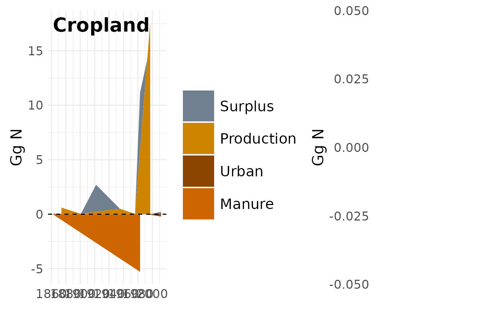

Plot cropland and semi-natural input-output panels side by side
Source:R/input_output_plots.R
plot_input_output_land_panel.RdCombines plot_input_output() for "Cropland" and
"semi_natural_agroecosystems" into a single two-panel figure. When
per_ha = TRUE, each panel is normalized by its own land-use area
(cropland area for the left panel, semi-natural agroecosystem area for
the right) – unlike plot_input_output_total_panel(), whose two panels
share the same total agricultural area. The y-axis label and caption
only mention per-hectare units when normalization actually took effect
(it silently falls back to national totals if the area data could not
be loaded), so the figure never claims a unit it did not use.
Arguments
- per_ha
Logical. If
TRUE, express nitrogen flows per hectare of each panel's own land-use area (kg N/ha) instead of national totals (Gg N). Requires remote data, so it is ignored in example mode. Default isFALSE.- example
If
TRUE, build both panels from a small example dataset without downloading remote data. Default isFALSE.
Examples
if (
requireNamespace("ggplot2", quietly = TRUE) &&
requireNamespace("patchwork", quietly = TRUE)
) {
plot_input_output_land_panel(example = TRUE)
}
#> Warning: no non-missing arguments to min; returning Inf
#> Warning: Position guide is perpendicular to the intended axis.
#> ℹ Did you mean to specify a different guide `position`?
#> Warning: No shared levels found between `names(values)` of the manual scale and the
#> data's fill values.
